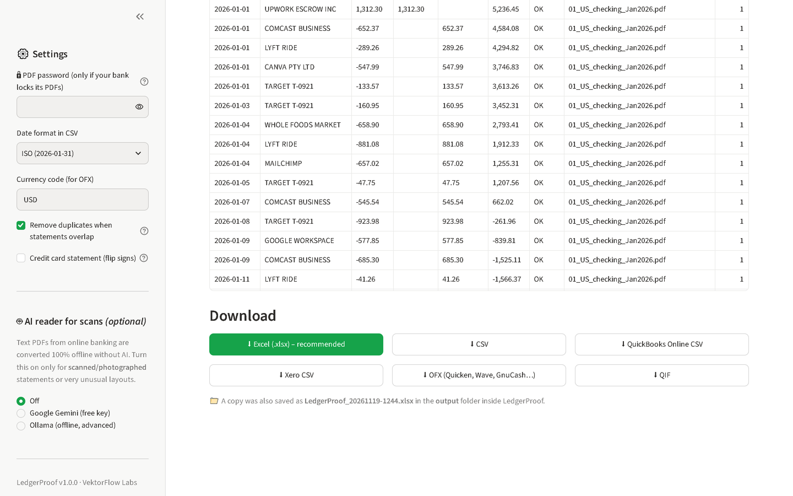

For bookkeepers, accountants and small businesses
Convert PDF bank statements to Excel, checked to the cent.
Drop in your statements and get a spreadsheet where every row is checked against the balances your bank printed. It runs on your own computer, so your files are not uploaded.
No sign-up, no email. Windows, Mac and Linux. Free version: 2 statements at a time, Excel and CSV.

See it in 30 seconds
- ✓Drop in PDF statements from any mix of banks.
- ✓Every row is checked against the running balance the bank printed.
- ✓Rows that don't add up are flagged before they reach your books.
How it works
Install
Unzip and double-click INSTALL. It takes about two minutes, once.
Drop your PDFs
Add statements from any banks and months, including credit card statements. Overlapping statements are de-duplicated.
Download and import
Export to Excel, CSV, QuickBooks Online, Xero, OFX or QIF.
Your bank already printed the answer key.
Every statement shows an opening balance, a closing balance and usually a running balance on each row. LedgerProof re-adds every transaction and checks it against those numbers.
- Verified: every row and the closing balance match to the cent.
- Check rows: something doesn't add up, and the exact row is highlighted with the expected and printed balance.
- No balances: your bank prints none, so you're told the rows can't be proven.

Is it safe?
Stays on your computer
Statements never leave it unless you turn on the optional AI reader for scans.
Not open to the network
The app listens only on your own machine (127.0.0.1), not on your network.
Safe to open in Excel
Exports are protected against spreadsheet formula injection.
Start free. Pay once if you need more.
Lite
Free
- 2 statements at a time
- Excel and CSV
- The same balance check
- No sign-up, no email
Full
$29 one payment
- No subscription, no page limits
- Excel, CSV, QuickBooks, Xero, OFX, QIF
- Optional AI reader for scans, with your own free Gemini key or a local Ollama model
Secure checkout by Gumroad. Instant download.
Questions
Will it work with my bank?
LedgerProof doesn't use per-bank templates. It finds the date and money columns by position, then picks the reading where your running balances add up. It has been tested on 400+ generated statement layouts, including US, UK, EU and AU styles. The free version is the quickest way to try your own statements.
Is my data uploaded anywhere?
No. It runs on your computer and works offline after installation. Only if you turn on the Gemini AI reader are those specific files sent to Google, under your own key.
What about scanned statements?
Statements downloaded from online banking convert offline with no AI. For scans, turn on the optional AI reader with your own free Google Gemini key or a local Ollama model. Its output goes through the same balance check.
Do I need to be technical?
No. Double-click the installer, then the desktop icon. LedgerProof opens in your browser like a website, and a visual quickstart guide is included.
Can I use it for my clients?
Yes, on the computers you work on, for any number of clients. Please don't resell or redistribute the software.
Credit card statements?
Yes. Tick "Credit card statement" so purchases export as money out.
Is there a refund?
Yes, within 30 days of buying the full version.